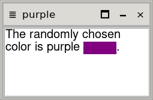

The MDI module mdi-1.tm is a self-contained pure
Tcl/Tk 9 module that provides a class for creating a MDI window
area and for creating and managing MDI child windows. It has no
dependencies.
The End-User Interface is described below, and the programmer’s API below that.
Each MDI child window (referred to simply as “window” from now on), has a ≣ window menu button, a title, a 🗖 maximize button, a 🗕 minimize button, and by default a × close button.
The window mouse actions and their results:
If the Move menu option is chosen, the window enters move mode and may be moved by using the arrow keys. Similarly if the Resize menu option is chosen, the window enters resize mode and may be resized by using the arrow keys. The most common way to move a window is to click the title bar and drag it to the desired position. Similarly the most common way to resize a window is to click the frame and drag it to the required size.
If a window is maximized it will fill the entire MDI area—unless there are one or more minimized windows in which case it will fill as much of the MDI area as possible without covering the minimized windows.
Applications using MDI windows would normally provide a Window
menu (and possibly a corresponding toolbar). This menu would typically
provide the options: Cascade, Tile, Minimize All
(or Iconize All), and a Windows submenu listing all the unclosed
unhidden windows. Additional options some or all of which might be
provided would apply to the “active” window: Maximize,
Minimize, Restore, Move, Resize,
Close. Naturally the API below supports all of these. The
mdi_test.tk example shows most of this in action.
The mdi module (and namespace of the same name) provides
one public function; the mdi::Window
new constructor. The returned mdi::Window object provides
methods for making new child windows (of type mdi::child). It
also provides methods for operating on its list of child windows, for
example, cascading and tiling them. And mdi::child windows
themselves provide various methods.
The following virtual events may be generated:
<<MdiChildClose>> — this event is generated
when a child window is closed; bind to it for each new child to be able
to save state before destroying; see mdi::Window new_child for an
example.<<MdiTileError>> — this event is generated
if there isn’t enough room to tile all the windows even at their minimum
sizes or if there are too many windows to tile at all (currently 37 or
more).<<MdiChildHide>> — this event is generated
when a child window is hidden; rarely used.<<MdiChildUnhide>> — this event is
generated when a hidden child window is shown; rarely used.
Note that most of the methods and the most important events (the first
two) are all illustrated in the mdi_test.tk example.
Only the methods listed here are “public”; no other methods should be used.
mdi::Window new name
The name is the name of the window (a
ttk::frame) to create. For example, if the application’s
main window is .mainwindow, the name
might be .mainwindow.mdi.
For the mdi::Window methods shown below we will assume that
the mdi::Window object is held in a variable called
$MdiWin.
$MdiWin destroy
This method closes and destroy all the mdi::Window’s
mdi::child windows.
If the mdi::child windows have state that needs to be saved
they should be iterated over (e.g., using $MdiWin children)
and their data saved before calling $MdiWin destroy. For
example:
foreach child [$MdiWin children] {
# retrieve and save the $child’s state
}
$MdiWin destroy
$MdiWin frame
This method returns the mdi::Window’s
ttk::frame. It is needed to provide the frame which may
then be packed or gridded inside the main window.
$MdiWin children
This method returns a list of all the
mdi::Window’s unclosed unhidden mdi::child
windows.
$MdiWin hidden_children
This method returns a list of all the
mdi::Window’s hidden mdi::child windows. This
method is provided so that if mdi::child windows are hidden
and their state needs to be saved, they can be iterated over. Normally
mdi::child windows are never hidden, only minimized or
closed so this method is rarely used.
$MdiWin size
This method returns a two-element list of the mdi::Window’s
(frame’s) width and height.
$MdiWin set_background_color color$MdiWin set_active_child_frame_color color$MdiWin set_inactive_child_frame_color color$MdiWin set_active_child_title_color color$MdiWin set_inactive_child_title_color color
These methods can be used to override the default colors used by the
mdi::Window and its mdi::child windows. The
color is a standard Tcl/Tk color name or hex value
(e.g., red or #FF0000).
$MdiWin new_child {title ""}
{geometry {}} {closable 1}
Use this method to create new mdi::child windows. If no
title is given an auto-generated one is used (e.g.,
“Window #3”). If no geometry is given the window is
given a default position and size. By default mdi::child
windows are closable; this may be overridden by passing 0
(false) as the third argument.
Child windows that are closable may be closed by the user clicking their
× close button or programmatically by calling the mdi::child
on_close_if_closable method. When a mdi::child is
closed it generates a <<MdiChildClose>> event.
A closed window is not destroyed. If a mdi::child
window has state that needs to be saved, bind to the close event, save
the child’s state, and then destroy the window. For example:
set child [$MdiWin new_child $title]
bind [$child frame] <<MdiChildClose>> [callback on_child_closed %d]
…
oo::define App method on_child_closed child {
lassign [$child geometry] x y width height
set title [$child title]
# Save state here, e.g., geometry, title, etc.
$child destroy
}
$MdiWin minimize_all
This method minimizes (iconizes) all the mdi::child
windows. Applications might bind this method to a window toolbar button
or to a Window menu option. See the mdi::Window new_window_menu method.
$MdiWin cascade
This method cascades all the mdi::child windows (including
any that were minimized). Applications might bind this method to a
window toolbar button or to a Window menu option. See the mdi::Window new_window_menu method.
$MdiWin tile
This method tiles all the mdi::child windows (including
any that were minimized). Applications might bind this method to a
window toolbar button or to a Window menu option. See the mdi::Window new_window_menu method.
If there is only one mdi::child window this method will
simply maximize that window.
Note that tiling is not always possible in which case no action is taken
beyond a <<MdiTileError>> event being
generated. For example, if there is insufficient space in the
mdi::Window to tile every mdi::child window
even at their minimum sizes, tiling cannot be done. Also, if there are
too many mdi::child windows (currently 37 or more), then
tiling will not be done.
One way of handling too many child windows is to bind to the
<<MdiTileError>> event and cascade. For
example:
bind [$MdiWin frame] <<MdiTileError>> [callback on_tile_error]
…
oo::define App method on_tile_error {} { $MdiWin cascade }
$MdiWin active_child
This method returns the mdi::child window that has the
focus (or that last had the focus if none currently have it). It will
return the empty string if there isn’t one.
Applications normally use this method in callbacks that respond to
toolbar buttons or Window menu options that are concerned with
individual mdi::child windows. For example:
oo::define App method on_maximize_child {} {
if {[set child [$MdiWin active_child]] ne ""} { $child on_maximize }
}
$MdiWin make_child_visible child
This method makes the given child window visible. If
the window is within the mdi::Window’s area it is raised
and given focus; if it is outside the area (so not physically visible),
it is moved to the center of the area and then raised and given focus.
Applications normally have a Window menu submenu, Windows,
each of whose options is the title of a mdi::child window.
Each of these options is normally bound to the
make_child_visible method.
See the mdi::Window new_window_menu
method.
$MdiWin on_maximize_child$MdiWin on_minimize_child$MdiWin on_restore_child$MdiWin on_move_mode_child$MdiWin on_resize_mode_child$MdiWin on_close_child
These methods may be bound to a Window menu or toolbar to provide options for controlling a window. See the mdi::Window new_window_menu method.
$MdiWin new_window_menu
window_menu {options {cascade tile minimize_all maximize
minimize restore move resize close windows}}
The window_menu is the menu to populate; for
example:
menu .menu
. configure -menu .menu
menu .menu.file
.menu add cascade -menu .menu.file -label File -underline 0
# Other File menu options…
.menu.file add command -command [callback on_quit] -label Quit \
-underline 0 -accelerator Ctrl+Q -compound left
# Any other menus that precede the Window menu…
$MdiWin new_window_menu .menu ;# creates a .menu._windows menu
menu .menu.help
.menu add cascade -menu .menu.help -label Help -underline 0
By default the Window menu will provide options for Cascade, Tile, and Minimize All, which apply to all the child windows; Maximize, Minimize, Restore, Move, Resize, and Close (which will only close closable windows), which apply to the “active” window; and Windows (a submenu of the unclosed unhidden windows).
If you don’t want all these options, simply pass your own
options list containing only those options you
require.
All the window menu options are bound to the appropriate methods so they all work as-is.
mdi::child methods
The mdi::child constructor should not be used;
always call mdi::Window new_child
to create new mdi::child windows.
For the mdi::child window methods shown below we will
assume that the mdi::child object is held in a variable
called $child.
$child destroy
This method calls the mdi::child’s destructor which removes
the window from the parent mdi::Window’s list of children
and then destroys the mdi::child window’s
ttk::frame. See mdi::Window new_child for an example
of use.
$child frame
This method returns the mdi::child’s
ttk::frame. The only use that should be made of this method
is to bind to its <<MdiChildClose>> event
(see below).
$child bodymdi::child’s “body”
ttk::frame. Use this to populate the child window with your
own widgets. For example:
set child [$MdiWin new_child $title $geometry $closable]
bind [$child frame] <<MdiChildClose>> [callback on_child_closed %d]
set tk_text [text [$child body].txt -font Helvetica -wrap word]
pack $tk_text -fill both -expand 1
Here, a new mdi::child window is created, its
<<MdiChildClose>> event is bound so that we can
save its state when it is closed (see the mdi::Window new_child method), and we populate its
body with a text widget. Naturally, we could populate the
body with any number of widgets including scrollbars etc.
$child title$child set_title title
The title method returns the mdi::child
window’s title and the set_title method sets the title to
title.
$child is_closed$child is_closable$child is_hidden$child is_visible$child is_minimized
These methods return either 1 (true) or 0
(false) regarding the mdi::child window’s state. The
is_visible method returns 1 (true) if the
window is closed or hidden; but if it is neither it returns
0 (false).
$child on_maximize$child on_minimize$child on_restore$child on_move_mode$child on_resize_modeApplications might bind these methods to a window toolbar button or to a Window menu option. See the mdi::Window new_window_menu method. If binding, here is an example of a callback to be bound to:
oo::define App method on_maximize_child {} {
if {[set child [$MdiWin active_child]] ne ""} { $child on_maximize }
}
For moving and resizing invoking the on_move_mode or
on_resize_mode methods means that the user can move or
resize by pressing the arrow keys and finish by pressing the
Escape key.
$child on_close$child on_close_if_closable
These methods are used to programmatically close a window. Typically
on_close_if_closable will be bound to a Window menu
option as it is when the mdi::Window
new_window_menu method is used.
When either method is called—whether via a programmer’s own binding or
due to the user clicking a window’s × close button or clicking a
window’s ≣ window menu button and then clicking the Close option;
and in the case of calling on_close_if_closable providing
the window is closable—it hides the window and generates a
<<MdiChildClose>> event. (See the mdi::Window new_child method for an
example of binding to this event and saving a window’s state before
destroying it.)
Use on_close to close a window which is not closable (i.e.,
not user-closable). In all other cases it is best to use
on_close_if_closable.
$child min_size$child size$child geometry
The “size” methods return a two-element list of width and
height; the geometry method returns a four-element
list of x, y, width, and height.
$child on_hide
This method can be used to hide a mdi::child window. It
should be used programmatically and normally not offered to the end-user
as an option. This method is provided for completeness but is not
recommended for normal use cases.
$child on_show
This method can be used to show a hidden mdi::child
window. It should be used programmatically and normally not offered to
the end-user as an option. This method is provided for completeness but
is not recommended for normal use cases.